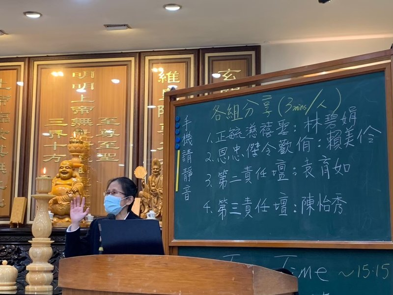

後學衷心感謝天恩師德，感謝白水聖帝、不休息菩薩將道傳到台灣，讓後學有了求道的機會!修道辦道真的是解救自己脫離困境，有時想想如果自己沒有求道會變得有多糟糕呢?每當這樣想的時候，心裡就無限的感恩!就會升起自己一定要好好修辦的信念!
初到正德壇
後學也非常感謝上天巧妙的安排，讓後學從台中道場來到新竹輾轉找了二年才找到機會接近正德壇。在這二年當中，後學在奉天宮待了一年，在光耀待了一年，都沒有歸屬感，所以後學很珍惜在正德修辦的契機!感謝李素鳳點傳師對後學的安排及照顧，讓後學重新接讀崇德班，因而結識了強大的修辦同儕!在那個班程裡每個同學都很優秀，對那時不太優秀的自己起到了很正向的激勵作用!也很幸運的有這一群同學們始終堅持修辦，彼此間鼓舞打氣!
講培班的覺醒
回想過去的後學，總覺得自己好像活在雲裡霧裡一樣的不踏實，腦袋沒有清醒過....後學覺得自己開始醒過來，是在講培班立愿後!那時候心裡湧起一份使命感，覺得自己應該要有一番作為貢獻自己，從那時候開始後學才有踏實的感覺!也許是講師的使命喚醒了後學，讓自己重新活過來了!所以從領獎師的天職開始，後學才真正算是自己主動投入道場的運作，以前好像都是被推著走的，但是後學不能否認因為有那段被推著走的時光作為基礎，讓後學逐漸有資糧去做質量的轉變，所以後學深深的感受到上天對每個人都做了最好的安排，只要心裡懷著感恩省思的心，就能收到上天為每個人準備的禮物!
在毓德壇的修辦
後學很感謝當初找後學一起開創毓德壇的前賢，雖然剛到毓德的時候懵懵懂懂，不知道自己的定位，但是大家在修辦中一同成長。印象中那時的後學還很白目，常常心直口快講一些不討喜的話，幸好大家都很有包容心，讓後學在那段時間成長很多。
後學記得剛開始自己是接任壇內道務組的工作，但後學並沒有辦法掌握好自己的任務，所以沒有發揮甚麼功能!後來雖然接任道務義字班，還是沒有清楚自己該做的事情，所以毓德的三多成績很不理想，因此後學也萌生退意，但是因為沒有可以接任的人選，所以後學最後接受這就是自己的使命任務，也因而開始轉變自己的想法，開始對自己的公職產生責任感及使命感，在作法上也開始調整!那時的後學內心好像被打了強心針，常常在心裡告訴自己要以”但願眾生德離苦，不為自己求安樂”為目標，能夠做利益眾生的事情!但是後學內德還是不足的，所以雖訂下目標，也還是起起伏伏的，所以常要提醒自己不要忘記自己的目標!
後學很感恩這樣的過程，以前總覺得問題都在外面，現在才發現原來問題都在自己裡面，因此才懂得要開始培內德，但是人的習性真的很頑強，改毛病去脾氣真的需要花費很多的功夫!後學還在改毛病去脾氣的起始步，目前的自己好像只有一大堆要改正的地方，對道場並沒有甚麼實質的建設性，因此後學還有很多需要道場栽培指導之處。
相信自己只要不斷的覺察自己調整自己，一定會越來越進步的!所以後學希望自己能夠好好的反思自己，真正的站在利益眾生的角度去做好每一件事情!一切都感謝天恩師德!感謝所有上天最好的安排!